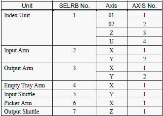

Service History
Subject: TR60 installation for Marvell demo
Handler Model: TR-60
Controller: RC520
Date: 11 Mar 2010
Symptom
TR60 installation for Marvell demo.
Action
1. Install change kit.
2. Power ON, encountered F-5018, T-4301. Replaced battery to charge motor capacitor.
3. Re-start SEPL and encountered F-5016. Reset motor encoder and restart SPEL.
4. Encountered F-5136 and after rest, all errors cleared.
5. Unable to home as HOFS and current POSE cannot be used.
6. Performed calibration of all robots.
7. As teaching jig is required, perform teaching for pick and place till Auto 1 by trial and error.
8. Encountered IC remains in soak boat although soak boat is empty.
9. Found 1-2 sensor broken thus always detecting IC present.
10. Unable to remove broken fibre wire inside so plug in at a weaker intensity of 2000(instead of 4000).
11. Encountered Output shuttle detect sensor error.
12. Found coating/timing hole to cause improper timing sensor logic resulting in wrong setup detected during initial start.
13. Used black tape on output shuttle and ok.
14. Dry run with units, ok.
|
Dip switch to initialise encoder |
Robot Number and Axis Number  |
Cause